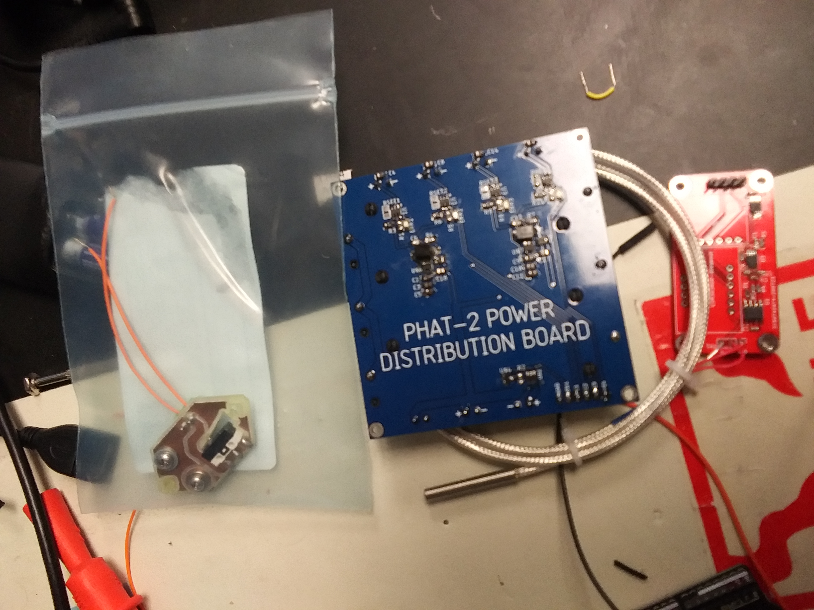
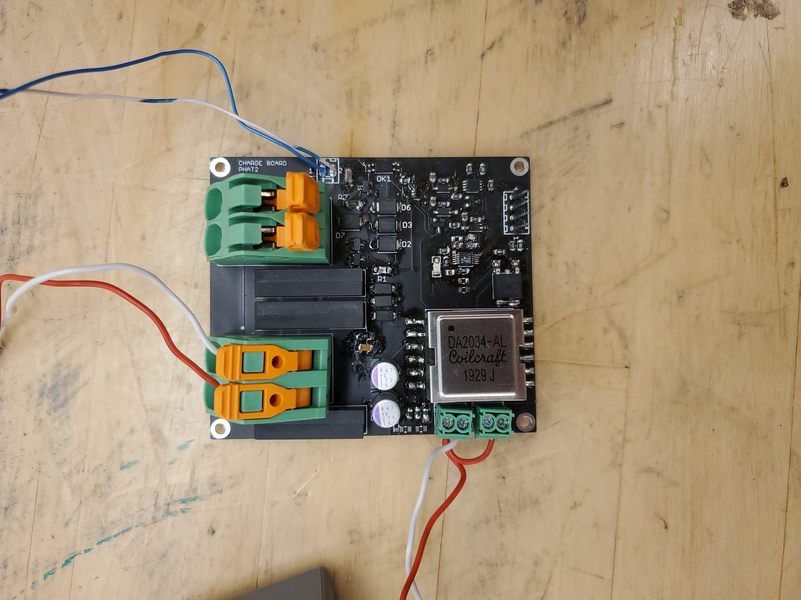
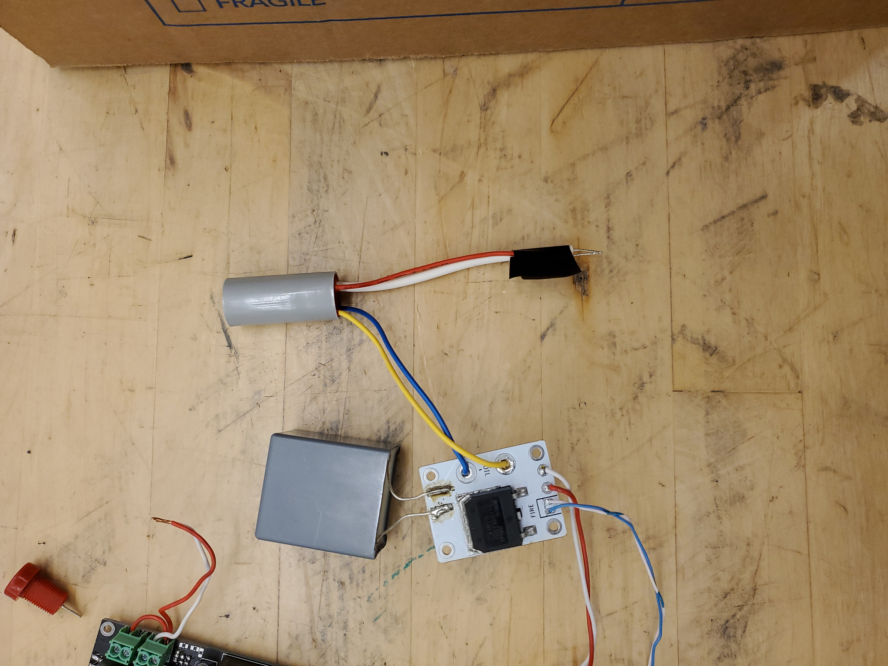
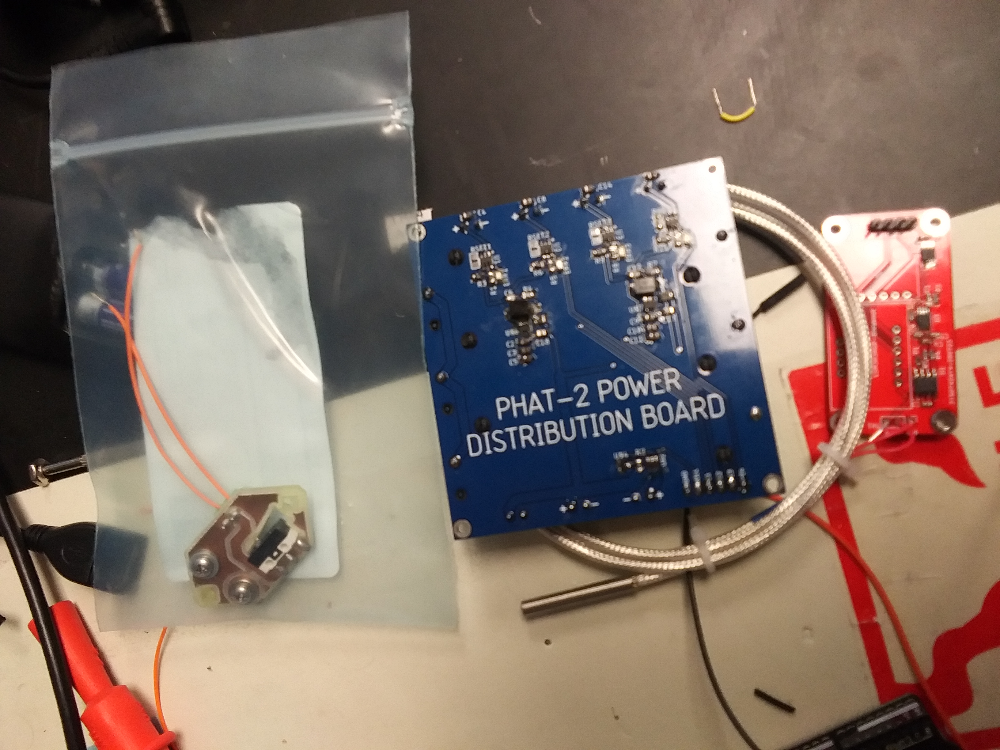
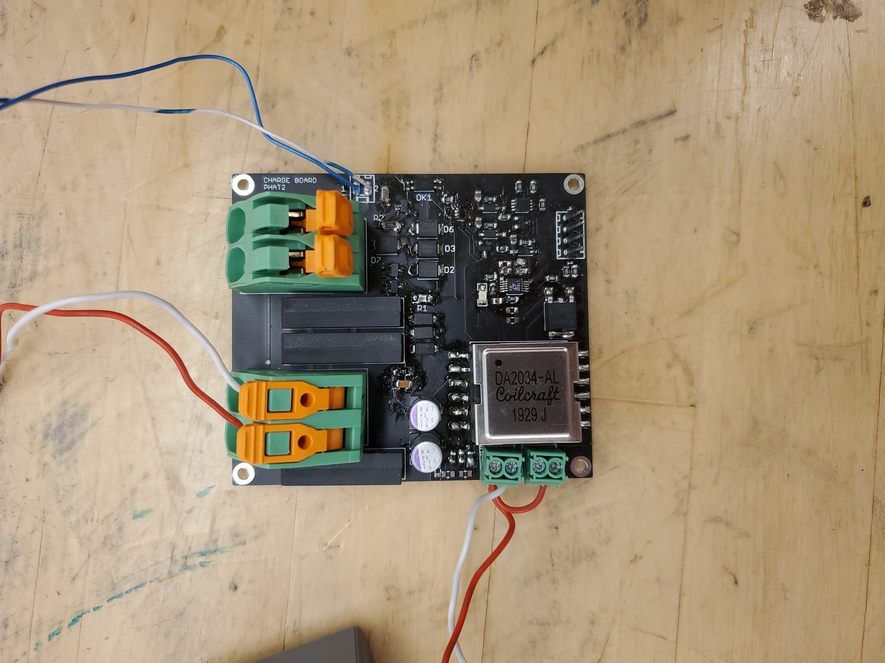
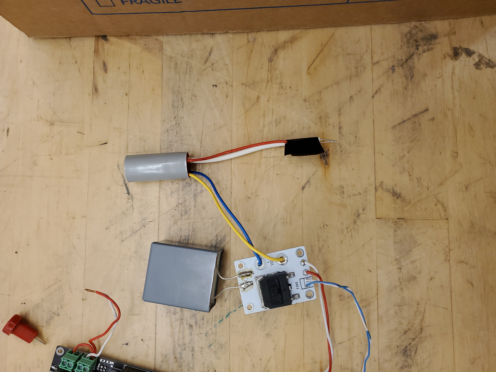

PHAT-2
The Platform for High Altitude Technology 2 (PHAT-2) was a balloon mission developed
by the Husky Satellite Lab, and it was the first project that I was assigned after joining
the club. Unfortunately, a number of factors meant that the structure and software aspects
of the balloon were never finished, but I was able to build and test all of the electronics.
The photos below show the cutdown detector, a langmuir probe controller, the power distribution
board, and the ADCS/IMU board.

 


The coolest part of the driver electronics is the Pulsed Plasma Thruster (PPT) charger and
igniter. The Advanced Propulsion Laboratory at the University of Washington had a design for
the charger and igniter circuits that required a 4 layer PCB, it required two separate high
voltage flyback converters and it would produce huge surges when it fired. These surges killed
the control electronics for PHAT-1, so I redesigned the charger to provide complete galvanic
isolation between the PPT and the electrical subsystem during firing. I was also able to
eliminate one of the flyback converters and use a 2 layer PCB. It could charge a 100uF bank of
capacitors to 800V in a few hundred milliseconds, and generate 26kV arcs for ignition.



The coolest part of the driver electronics is the Pulsed Plasma Thruster (PPT) charger and
igniter. The Advanced Propulsion Laboratory at the University of Washington had a design for
the charger and igniter circuits that required a 4 layer PCB, it required two separate high
voltage flyback converters and it would produce huge surges when it fired. These surges killed
the control electronics for PHAT-1, so I redesigned the charger to provide complete galvanic
isolation between the PPT and the electrical subsystem during firing. I was also able to
eliminate one of the flyback converters and use a 2 layer PCB. It could charge a 100uF bank of
capacitors to 800V in a few hundred milliseconds, and generate 26kV arcs for ignition.
 For this project, I also build a langmuir probe controller and frontend, a power distribution
board, and a very simple system for detecting when the flight was terminated by a nichrome wire
cutdown using a single limit switch.
For this project, I also build a langmuir probe controller and frontend, a power distribution
board, and a very simple system for detecting when the flight was terminated by a nichrome wire
cutdown using a single limit switch.